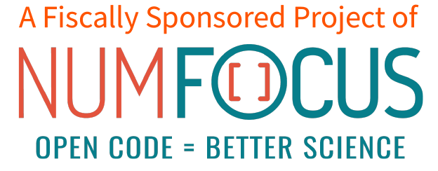

The Astropy Project is a community effort to develop a core package for astronomy using the Python programming language and improve usability, interoperability, and collaboration between astronomy Python packages. The core astropy package contains functionality aimed at professional astronomers and astrophysicists, but may be useful to anyone developing astronomy software. The Astropy Project also includes "affiliated packages," Python packages that are not necessarily developed by the core development team, but share the goals of Astropy, and often build from the core package's code and infrastructure.
Aside from the actual code, Astropy is also a community of astronomy- associated users and developers that agree that sharing utilities is healthy for the community and the science it produces. This community is of course central to accomplishing anything with the code itself. We welcome anyone who wishes to contribute to the project and expect everyone in our community to follow the code of conduct when interacting with others.
For more details on the plan for the project, you can read the documentation overview, or the original vision from when the project was founded.
The astropy package (alternatively known as the "core" package) contains various classes, utilities, and a packaging framework intended to provide commonly-used astronomy tools. It is divided into a variety of sub-packages, which are described in detail in the documentation.
The core also provides this documentation, and a variety of utilities that simplify starting other python astronomy/astrophysics packages. As described in the following section, these simplify the process of creating affiliated packages.
The Astropy project includes the concept of "affiliated packages." An affiliated package is an astronomy-related python package that is not part of the astropy core source code, but has requested to be included in the general community effort of the Astropy project. Such a package may be a candidate for eventual inclusion in the main astropy package (although this is not required). Until then, however, it is a separate package, and may not be in the astropy namespace.
The authoritative list of current affiliated packages is available at http://affiliated.astropy.org, including a machine-readable JSON file.
If you are interested in starting an affiliated package, or have a package you are interested in making more compatible with astropy, the astropy core package includes features that simplify and homogenize package management. Astropy provides a package template that provides a common way to organize a package, to make your life simpler. You can use this template either with a new package you are starting or an existing package to give it most of the organizational tools Astropy provides, including the documentation, testing, and Cython-building tools. See the usage instructions in the template for further details.
To then get your package listed on the registry, take a look at the guidelines for becoming an affiliated package , and then post your intent on the astropy-dev mailing list. The Astropy coordination committee, in consultation with the community, will provide you feedback on the package, and will add it to the registry when it is approved.
Astropy is licensed under a three-clause BSD license. For details, see the LICENSE.rst file in the astropy repository.
The Astropy Project is fiscally sponsored by NumFOCUS
